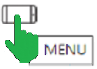

https://fleursauvageyonne.github.io/ |
|||||||||||||||||||
|
et d'ailleurs | |||||||||||||||||||
| un petit herbier virtuel de botanistes amateurs pour découvrir, comme son nom l'indique, les fleurs sauvages de l'Yonne sur les terres du premier inventaire floristique français et de Colette née le 28 janvier 1873 en Puisaye,  qui aimait les fleurs présentées dans le présent herbier sous la forme de "fiches" classées, dans leur famille, selon leur couleur approximative lorsqu'elles sont colorées
proposées sous différents angles et par leurs Noms latins et français | |||||||||||||||||||
|  | |||||||||||||||||||
| C'est l'Hiver. Avant qu'il ne prenne fin les bourgeons floraux de Cornus mas vont s'épanouir.  Mais pour l'instant, les fleurs nous semblent comme statufiées, pétrifiées, elles qui détectent tant d'ondes sismiques, acoustiques, lumineuses et même électriques...  C'est comme si elles percevaient que "La fin d'un rêve" s'approchait, certains Humains devenant pire que des Végétaux toxiques n'ayant même pas la sensibilité d'un monstre tel que Picasso capable d'inventer, grâce à Aragon dont l'écoute est intolérable désormais, une icône de paix.  Une colombe à Séville en Espagne en 2022 | |||||||||||||||||||
| Bienvenue Welcome / Bienvenidos / Välkommen добро пожаловать / مَرْحَبا いらっしゃいませ / 欢迎 |
|||||||||||||||||||
| Un herbier imaginé par Claude Richard Conception/maintenance informatiques : Annick Jani | |||||||||||||||||||
| Mise à jour : JANVIER 2023 |
{kind=link}